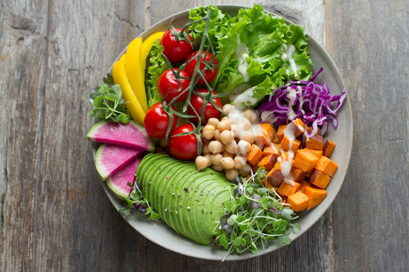
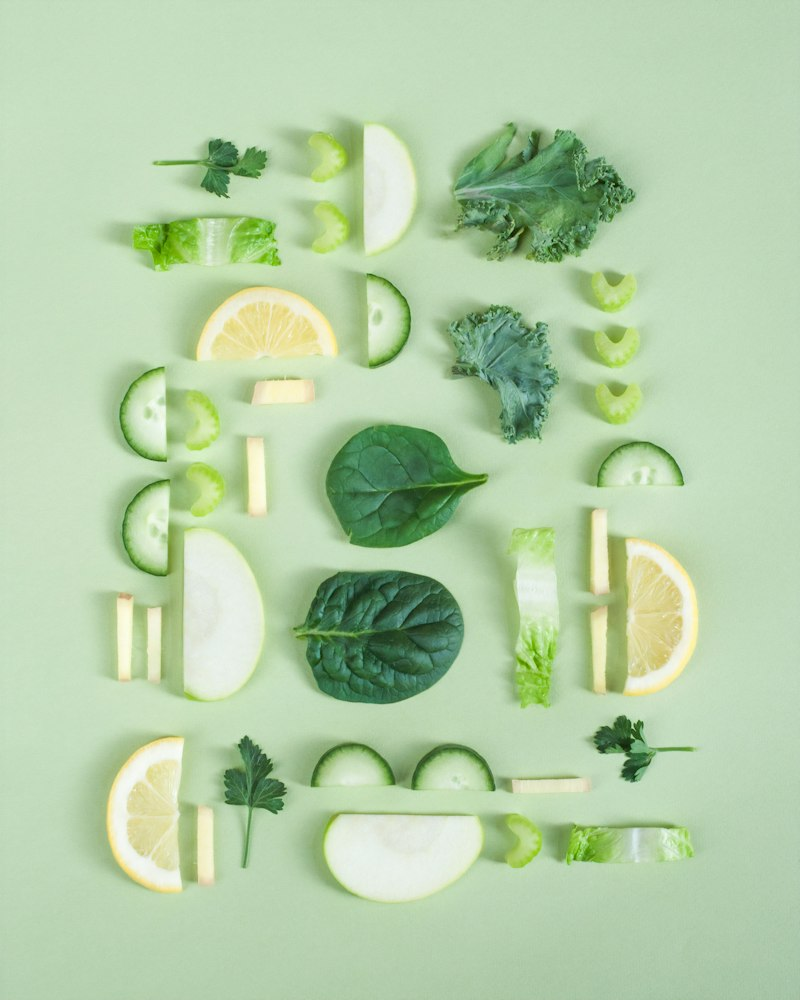
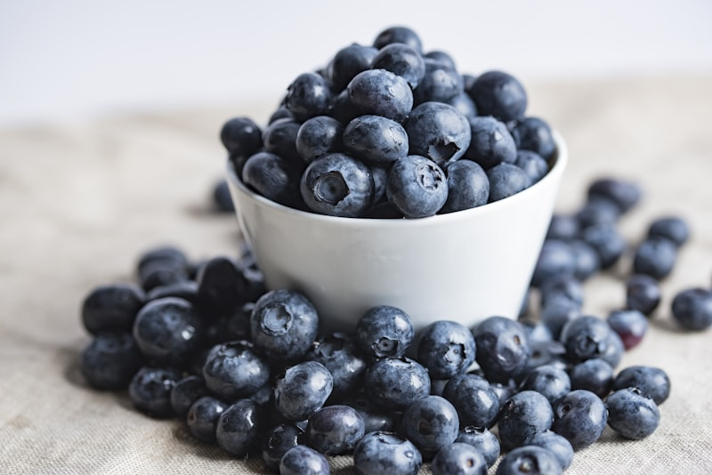
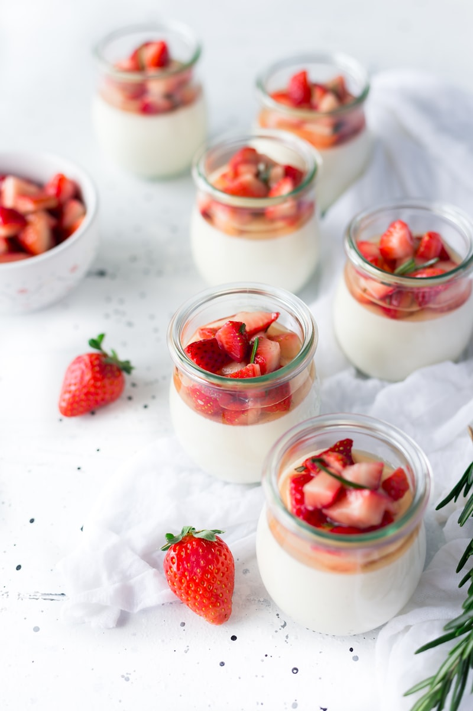
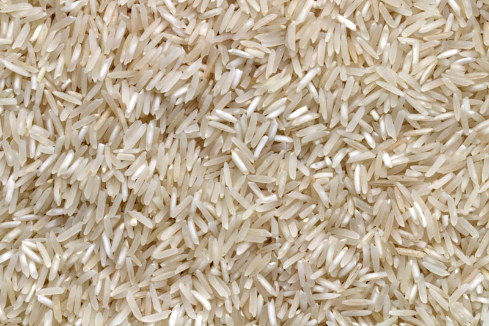
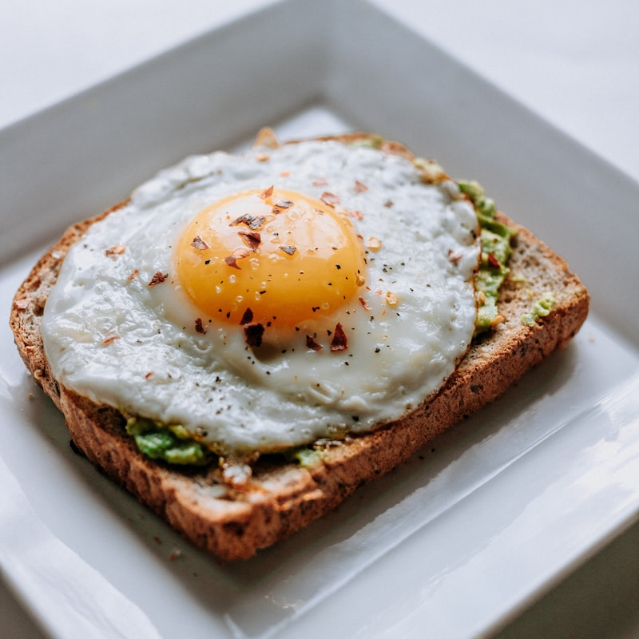

Circadian Alignment
Syncing your body clock with natural daylight triggers optimal cortisol in the morning and restful melatonin secretion at night.
- Morning sunlight (10–15 mins)
- Fixed wake-up schedule
- Evening screen dimming
Your companion for a healthier life. Cultivate sustainable daily habits, clean nutrition, active movement, and deep recovery designed to help students and busy individuals flourish every day.
Daily Hydration Goal
Restorative Sleep
Active Movement
Science-Backed Tips
Sustainable health is not built on temporary trends, but on consistent daily rituals that harmonize your physical vitality, mental clarity, and biological rhythm.
Syncing your body clock with natural daylight triggers optimal cortisol in the morning and restful melatonin secretion at night.
Chronic psychological tension elevates inflammatory markers. Deliberate mindfulness and breathwork reset the autonomic nervous system.
Fueling your cells with unrefined whole foods, vibrant polyphenols, and sufficient fiber protects against metabolic decline.
Sedentary study routines tighten posture and slow lymphatic drainage. Micro-movements throughout the day maintain joint integrity.
A practical, student-friendly cadence designed to optimize concentration, digestion, and physical stamina.
500ml water with pinch of electrolytes, 10 minutes of natural sky exposure to calibrate your inner clock.
Fiber-rich colorful lunch, 15-minute gentle stroll to prevent post-prandial blood sugar spikes and drowsiness.
30–45 minutes of moderate workout, functional calisthenics, or yoga to release accumulated academic fatigue.
Screens turned off, cool room ventilation, light gratitude reading or meditation leading into deep restorative rest.
Food is biological information. Choosing nutrient-dense, unprocessed foods enhances cognitive function, balances moods, and strengthens your natural immune shield.

Greens & VeggiesDense in anthocyanins, carotenoids, and insoluble dietary fiber to nourish your microbiome and combat cellular oxidation.

Healthy FatsRich in ALA Omega-3 fatty acids, magnesium, and Vitamin E to reinforce neuron membranes and maintain arterial elasticity.
Lentils, chickpeas, beans, and sprouts provide clean essential amino acids for tissue repair and long-lasting satiety.

Vital FruitsBursting with Vitamin C, bioflavonoids, and natural electrolytes to promote collagen synthesis and fight free radicals.

Gut MicrobiomeTraditional curd, kefir, and fermented greens deliver billions of live beneficial bacteria to regulate the gut-brain axis.

Complex CarbohydratesRagi, jowar, bajra, and oats metabolize gradually to prevent mid-day slumps and sustain steady classroom and workplace focus.
Regular physical exertion improves insulin sensitivity, elevates BDNF (brain-derived neurotrophic factor) for sharp memory, and shields cardiovascular health.
Cardiovascular exercise enhances capillary density in muscles and pumps oxygen-rich blood to the brain. Incorporate brisk walking, cycling, jogging, or skipping to keep your resting heart rate healthy.
150 mins / week
VO2 Max & Cardiac Output
Skeletal muscle is our primary metabolic sink for glucose. Preserving lean muscle tissue through push-ups, squats, lunges, and planks prevents posture decline and accelerates resting metabolism.
2–3 Days / week
Bone Mineral Density & Core
Yoga bridges physical posture with conscious respiration. Classical sequences like Surya Namaskar (Sun Salutations) activate all primary muscle groups while reducing circulating cortisol levels.
3–4 Sessions / week
Fascia Health & Vagal Tone
Prolonged coding, studying, or laptop use leads to forward head posture ("tech neck") and tight hip flexors. Reversing these positions every 60 minutes prevents chronic lumbar tension.
2 mins every hour
Spinal Decompression
Optimal cognitive performance depends on cellular hydration and uninterrupted sleep cycles. Interactive tools to track your daily intake and reset your sleep hygiene.
5 clinical principles for Stage 3 slow-wave & REM sleep
Maintain consistent bed and wake times (even on weekends) to anchor your biological suprachiasmatic nucleus.
Electronic screens suppress natural melatonin. Switch to warm book reading or amber ambient lighting.
Core body temperature must drop by ~1°C to initiate deep slow-wave sleep. Ensure good cross-ventilation.
Caffeine has a biological half-life of 5–7 hours. Eliminating late stimulants protects deep REM architecture.
Write tomorrow's to-do list on paper before bed to alleviate sleep-onset insomnia and mental clutter.
Tap the glasses to log your daily intake (Saved in browser)
Empower yourself with scientifically verified health literacy. Demystify pervasive medical myths and learn proactive strategies to prevent modern lifestyle diseases.
Clearing the fog around viral health trends with verified physiological science:
Prolonged unguided starvation triggers metabolic down-regulation (loss of active thyroid T3) and forces muscle breakdown. Balanced, protein-rich caloric control produces sustainable fat reduction.
The popping sound is simply the cavitation (rapid formation and collapse) of gas bubbles in synovial fluid. Decades of clinical rheumatology studies confirm it does not cause arthritis.
Supplements lack the complex synergistic food matrix, dietary fiber, bioflavonoids, and polyphenols present in natural produce that enable nutrient absorption.
Mental fitness is an inseparable part of physiological health. Academic deadlines, competitive exams, and social pressures frequently induce sympathetic nervous overdrive.
Proactive personal hygiene breaks the chain of pathogen transmission in classrooms, hostels, and public transit.
Preventative diagnostic screening catches asymptomatic physiological trends years before disease onset.
| Screening Test | Recommended Frequency | Clinical Benchmark |
|---|---|---|
| Blood Pressure (BP) | Every 6 Months | < 120/80 mmHg |
| Fasting Blood Glucose / HbA1c | Annual | HbA1c < 5.7% (Fasting < 99 mg/dL) |
| Lipid Profile (Cholesterol) | Every 1–2 Years | Triglycerides < 150 mg/dL, HDL > 50 mg/dL |
| Vitamin D3 & Vitamin B12 | Annual (Crucial for students) | Vit D > 30 ng/mL, B12 > 400 pg/mL |
| Comprehensive Eye & Vision Test | Annual | Assess screen-induced refractive changes |
Conditions such as Type 2 Diabetes, Hypertension, and Non-Alcoholic Fatty Liver Disease (NAFLD) are strongly driven by lifestyle factors and can be actively mitigated:
Prioritize dietary fiber and resistance exercise. Muscle contraction moves glucose into cells independently of insulin.
Limit dietary sodium from packaged snacks, quit smoking and vaping, and increase potassium via bananas and leafy greens.
Eliminate high-fructose corn syrups and sweetened carbonated sodas, which metabolize directly into visceral hepatic fat.
Click on any photograph to view the high-resolution lightbox and discover holistic wellness principles in action.

Have questions about healthy lifestyle habits, suggestions for campus wellness, or want to share your fitness transformation? We are here for you.
Fill out the fields below and our wellness support team will reply within 24 hours.